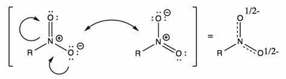

Resonance Structure
Resonance Structure is the alternate ways to represent the structure of organic compounds. In Chemistry, Resonance is also called the delocalization of electron density, which electrons is not bonded to one single atom. Here is an example of Resonance:
Structural Features for Resonance
There are 3 main structural features to look for in order to determine if resonance can be drawn:
-
Alternating double&single bonds. (ex. all around a ring)
-
Lone pair and/or charge next to a π bond.
-
Lone pair next to positive charge.
Arrow Pushing Mechanism
For drawing resonance, electrons can be moved via arrow pushing to generate resonance structure.
- Electrons get "pushed" to where they aren't; usually get pushed between 2 atoms near a π bond or positive charge.
- π electrons get pushed out if octet is exceeded.
- Fill in formal charges in new resonance structure.
- 
Major Contributor
Equivalent resonance can be flipped/rotated. Which we can tell from eye that the structure only flipped or being rotated. For example:
For non-equivalent resonance, the acutal molecule looks most like the major contributor. 3 indicators to determine major contributor:

- Maximize the octet rule
- Minimize the number of Formal Charge
- Put electron on more Electronegative atoms and positive charge on less Electronegative atoms.
Hybridization of Resonance
When determining hybridization or geometry of resonance structure, look at the resonance structure in whih π bonds are maxmize.